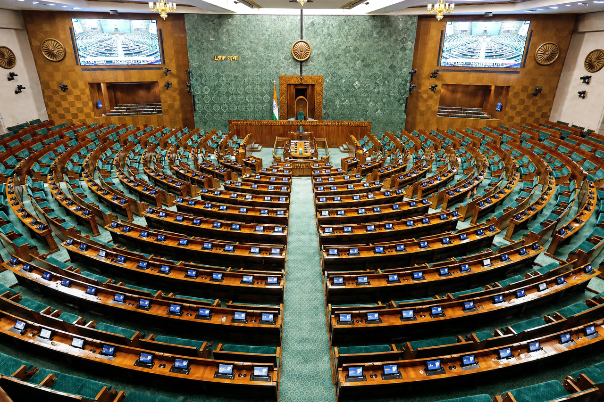

Leader of the Opposition in Lok Sabha

The Leader of the Opposition in Lok Sabha (IAST: Lok Sabhā ke Vipakṣa ke Netā) is the leader of the largest political party in the Lok Sabha that is not in the government. The office is statutory under the Salary and Allowances of Leaders of Opposition in Parliament Act, 1977, and its holder has the rank and status of a cabinet minister, sitting on selection committees for key appointments. Rahul Gandhi of the Indian National Congress has held the office since June 2024.
| Incumbent | Rahul Gandhi (since 9 June 2024) |
|---|---|
| Appointer | Speaker of the Lok Sabha, recognising the largest opposition party |
| Statutory basis | Leaders of Opposition in Parliament Act, 1977 |
| First holder | Ram Subhag Singh (1969) |
| Salary | Equivalent to a cabinet minister |
Recognition rule
Under the Directions of the Speaker, a party must hold at least ten per cent of the total seats of the House (55 of 543) to be recognised as a parliamentary party whose leader may be recognised as Leader of the Opposition. This threshold caused the office to remain vacant after the 2014 and 2019 general elections, when the largest opposition party, the Congress, won only 44 and 52 seats respectively. Earlier vacancies also occurred from 1952 to 1969 and from 1980 to 1989. In 2024 the Congress won 99 seats, and Rahul Gandhi was recognised as Leader of the Opposition on 25 June 2024.
Role and functions
The Leader of the Opposition leads the opposition benches, is the principal critic of the government in the House, and is a member of selection committees for the Central Vigilance Commissioner, the Central Information Commission, the Lokpal, the Director of the CBI (by committee practice) and the National Human Rights Commission. The holder receives briefings from the government on matters of national importance and is accorded precedence equivalent to a cabinet minister in the official order of precedence.
Notable holders
Ram Subhag Singh of Congress (O) became the first recognised holder in 1969 after the Congress split. Subsequent holders have included Y. B. Chavan, Rajiv Gandhi (1989–90), L. K. Advani, Atal Bihari Vajpayee, Sonia Gandhi (1999–2004) and Sushma Swaraj (2009–2014). Two holders, Vajpayee and Rajiv Gandhi, also served as Prime Minister.